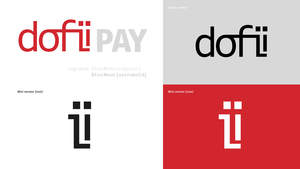

Trade Mark Journal No.2025/019 9 May 2025
UK00004193881 24 April 2025 (9,35,41,42,45)

- Class 9
- Software; Software testing software; Software reliability software; Computer software; Computer software packages; Antivirus software; Software for computers; Enterprise software; Antispyware software; Computer software development tools; Plugin software; Multimedia software; Workflow software; Software applications; Computer software applications; Programming software; System software; Antimalware software; Bioinformatics software; Debugging software; Computer antivirus software; Computer software for computer aided software engineering; Downloadable computer software; Computer application software; Compiler software; Computer software platforms; Encryption software; Server-side software; Application software; Computer e-commerce software; Networking software; Computer software programs; Hardware testing software; Graphics software; Interface software; Telecommunications software; E-commerce software; Computer software for encryption; Computer telephony software; Downloadable software; Computer software applications, downloadable; Downloadable computer software applications; Server software; Computer programming software; Computer interface software; Editing software; Simulation software; Computer hardware for use in computer-assisted software engineering; Business software; Platform software; Cryptography software; Operating software; Accounting software; Programs (Computer -) [downloadable software]; Computer programs [downloadable software]; Downloadable computer security software; Computer operating software; Smartphone software; Publishing software; Software suites; Intranet software; Computer firewall software; Embedded software; Security software; Downloadable computer utility software; Downloadable computer software for blockchain technology; Optimisation software; Computer software for advertising; Computer graphics software; Educational computer software; Software development tools; Mobile software; Hardware reliability software; Music software; Utility software; Manufacturing software; Diagramming software; Computer software [programmes]; Communications software; Software for smartphones; Testing software; CAD software; Animation software; Biometric software; Computer game software; Downloadable software applications; Computer software for database management; Downloadable computer software for the management of data.
- Class 35
- Retail services for computer software.
- Class 41
- Education; Education and training; Education and instruction; Education services; University education services; Medical education services; Computer education training; Computer education training services; Management of education services.
- Class 42
- Development of computer hardware and software; Computer software integration; Computer software development; Development of computer software; Consultancy (Computer software -); Computer software consultancy; Software engineering; Computer software consulting; Software authoring; Computer hardware and software design; Design of computer hardware and software; Software development in the framework of software publishing; Computer software (Design of -); Computer software design; Software design (Computer -); Design of computer software; Computer software engineering; Software development; Development of software; Computer software installation; Computer software (Installation of -); Installation of computer software; Testing of computer software; Update of computer software; Software design; Design of software; Rental of computer hardware and software; Duplication of computer software; Design and development of computer hardware and software; Installation of software; Software installation; Development of computer database software; Configuration of computer software; Computer software maintenance; Computer software (Maintenance of -); Maintenance of computer software; Leasing of computer software; Computer software design services; Services for the design of computer software; Design of computer database software; Developing computer software; Software as a service [SaaS] featuring software for machine learning; Upgrading of computer software; Development of computer software application solutions; Updating of computer software; Software (Updating of computer -); Computer software (Updating of -); Computer software programming services; Hiring of computer software; Computer software research; Design and development of computer software; Computer software design and development.
- Class 45
- Computer software licensing; Licensing of computer software; Licensing of software; Software licensing.
Doffii Inspirational Software Ltd